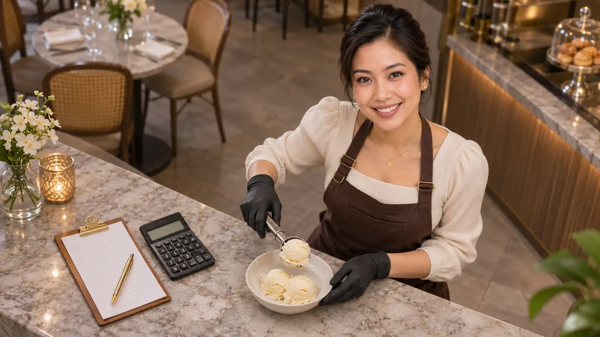

Combien coûte vraiment une boule de glace à un restaurant ?
Coût de la portion, frais généraux et rentabilité : ce qu’il faut savoir avant de servir de la glace dans votre restaurant.

La glace est l’un des desserts les plus simples et les plus polyvalents qu’un restaurant puisse proposer. Servie seule, avec un fondant au chocolat ou dans un dessert plus élaboré, elle demande peu de préparation et peut dégager des marges intéressantes.
Mais combien coûte réellement une boule de glace à un restaurant, une fois toutes les dépenses prises en compte ?
1. Le coût réel d’une boule
Chez Karem, nous estimons qu’un bac d’un litre de glace ou de sorbet donne entre 10 et 12 boules, selon la taille de la portion.
Sur la base de nos prix de gros à Phnom Penh, le tableau ci-dessous indique le coût produit par boule.
| Prix au litre | 10 boules | 12 boules |
|---|---|---|
| 6,00 $ | 0,60 $ | 0,50 $ |
| 6,50 $ | 0,65 $ | 0,54 $ |
| 7,00 $ | 0,70 $ | 0,58 $ |
| 8,00 $ | 0,80 $ | 0,67 $ |
| 9,00 $ | 0,90 $ | 0,75 $ |
| 9,50 $ | 0,95 $ | 0,79 $ |
Même des parfums haut de gamme comme la pistache, le thé vert matcha ou le sorbet framboise peuvent donc revenir à moins d’un dollar la portion, avant frais d’exploitation.
2. Tenir compte des frais généraux
Le prix d’achat n’est qu’une partie du coût réel. Il faut aussi compter l’électricité, l’entretien des congélateurs, le temps du personnel, le nettoyage, les pertes et une part des frais de fonctionnement généraux.
Prenons l’exemple d’un restaurant qui achète de la glace à la vanille à 7 $ le litre et en tire en moyenne 11 boules.
| Poste de dépense estimé | Coût par boule |
|---|---|
| Glace | 0,64 $ |
| Provision pour pertes (5 %) | 0,03 $ |
| Électricité et entretien des congélateurs | 0,05 $ |
| Temps du personnel et service | 0,15 $ |
| Nettoyage et plonge | 0,05 $ |
| Loyer et frais administratifs | 0,10 $ |
| Coût total estimé | 1,02 $ |
Ces chiffres sont donnés à titre indicatif et varient bien sûr selon la taille du restaurant, le coût du personnel, le volume des ventes et l’efficacité de l’exploitation.
3. Quelle rentabilité pour la glace ?
Avec un coût total estimé à 1,02 $ par boule, voyons ce que donnent plusieurs prix de vente, hors taxes.
| Prix de vente | Bénéfice estimé par boule* | Marge* |
|---|---|---|
| 2,00 $ | 0,98 $ | 49 % |
| 2,50 $ | 1,48 $ | 59 % |
| 3,00 $ | 1,98 $ | 66 % |
| 3,50 $ | 2,48 $ | 71 % |
| 4,00 $ | 2,98 $ | 75 % |
*Bénéfice et marge estimés après les frais d’exploitation répartis ci-dessus, mais avant toute autre dépense de l’entreprise et avant impôts.
À 3 $ la boule, la glace elle-même représente environ 21 % du prix de vente, avant pertes et frais généraux.
- Glace — 0,64 $ (21 %)
- Frais généraux et pertes — 0,38 $ (13 %)
- Bénéfice estimé — 1,98 $ (66 %)
4. Un dessert qui demande peu de préparation et d’investissement
Contrairement à beaucoup de desserts traditionnels, la glace prête à servir ne nécessite ni pâtissier dédié, ni longue préparation, ni équipement de cuisson supplémentaire.
Elle offre plusieurs avantages aux restaurants, hôtels et cafés :
- Un temps de préparation et de service minimal.
- Un contrôle facile des portions et des stocks.
- Moins de charge de travail en cuisine.
- Un large choix de parfums sans préparation complexe.
- La possibilité d’enrichir des desserts existants et d’en augmenter le prix de vente.
Une simple boule de glace à la vanille transforme un brownie, une tarte aux pommes ou un moelleux au chocolat tiède en un dessert plus attractif, et plus rentable.
5. Maximiser la rentabilité grâce à la maîtrise des portions
La régularité est essentielle. Utiliser une cuillère à glace standard et former le personnel à servir des portions identiques peut faire une vraie différence sur la rentabilité.
Tirer 12 boules au lieu de 10 d’un bac d’un litre réduit le coût produit par portion de près de 17 %, à condition que la portion reste adaptée au client et au prix affiché sur la carte.
Qualité et rentabilité peuvent aller de pair
Servir une glace de qualité ne veut pas dire sacrifier sa rentabilité.
Fabricant de glaces et de sorbets au Cambodge depuis 1999, Karem propose aux restaurants, hôtels et cafés un large choix de parfums classiques, tropicaux et originaux, pour composer des cartes de desserts attrayantes tout en gardant la maîtrise de leurs coûts.